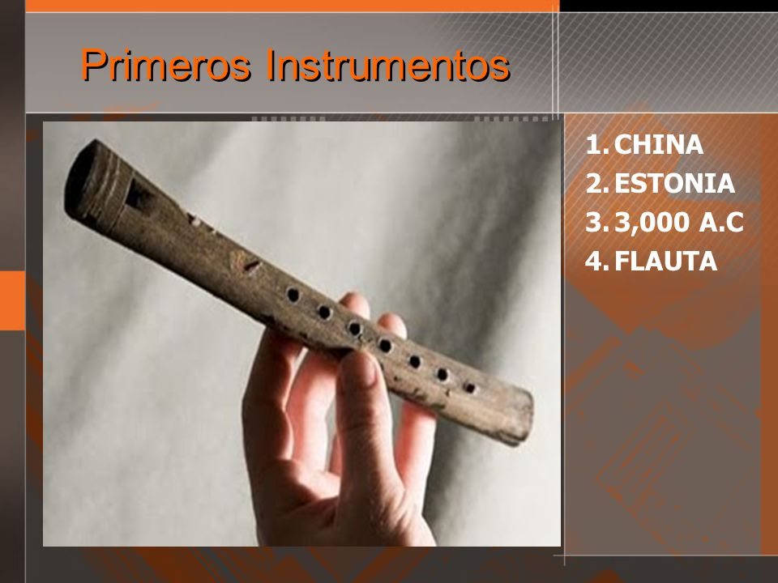

La musica como la conocemos tiene sus inicios desde la prehistoria, donde los intrumentos se cree que fueron las mismas voces de las personas, con el tiempo se fueron creando instrumentos primitivos que lograron que fuera evolucionando hasta el dia de hoy, no se sabe a ciencia cierta como inicio, pero sabemos que hoy en dia es un tema que abarca gran
cantidad de atencion.
Hay constancia de que hacia el 3000 a. C. en Sumeria ya contaban con instrumentos de percusión y cuerda (lira y arpa). Los cantos cultos antiguos eran más bien lamentaciones sobre textos poéticos.
Los primeros instrumentos fueron objetos, utensilios o el mismo cuerpo del hombre que podían producir sonidos. Estos instrumentos podemos clasificarlos en:
a) Autófonos: aquellos que producen sonidos por medio de la materia con la que están construidos. Son instrumentos de percusión; por ejemplo, hueso contra piedra.
b) Membranófonos: serie de instrumentos más sencillos de los construidos por el hombre. Tambores: hechos con una membrana tirante, sobre una nuez de coco, un recipiente cualquiera o una verdadera y auténtica caja de resonancia.
c) Cordófonos: son aquellos de cuerda; por ejemplo, el arpa.
d) Aerófonos: el sonido se origina en ellos por vibraciones de una columna de aire. Uno de los primeros instrumentos es la flauta, en un principio construida con un hueso con agujeros.

En la edad moderna la musica fue tomando importancia puesto que era una forma como ya antes dicho, de distraccion, celebracion y de entretenimiento, con esto, siglos despues se irian creando los primeros generos de musica entre estos, el Romanticismo que jugo un papel importante en aquellas epocas.